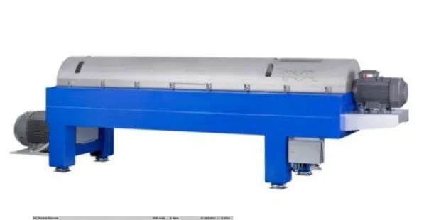

Engineered for maximum sludge thickening and dewatering performance. Compact, modular, and built to withstand abrasive municipal and industrial wastewater process requirements.
ALDEC decanter centrifuges are specifically designed for dewatering and thickening of municipal and industrial wastewater sludges. Built with high-grade AISI 316 stainless steel and advanced wear protection, the ALDEC range (including the G2 and G3 series) delivers exceptional cake dryness and liquid clarity.
The modular design ensures rapid maintenance and reduces transport and disposal costs by minimizing the final sludge volume. With thousands of successful installations around the globe, it's the most reliable choice for demanding plant managers.

Features SolidsProtect, FeedProtect, and FlightGuard wear protection for handling abrasive sludges with minimal wear.
Innovative design consumes up to 50% less energy than older centrifuge generations, significantly lowering operational costs.
Equipped with DCC controllers that automatically optimize differential speed to maintain constant cake dryness during feed variations.
Managing your plant's byproduct output:
Start cutting your transport and disposal costs with the ALDEC series. Talk to our application engineers for a sizing analysis.